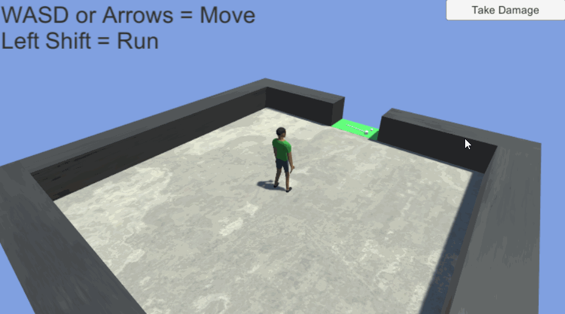
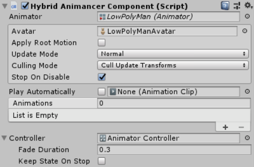

Location: Assets/Plugins/Animancer/Examples/09 Animator Controllers/01 Hybrid
Namespace:
Animancer.Examples.AnimatorControllers
This example demonstrates how you can use a HybridAnimancerComponent to play a default Animator Controller for some things and individual separate AnimationClips for others. Specifically, it uses an Animator Controller for the character's main actions such as locomotion for "regular" gameplay and then when they enter the Golf Mini Game it uses direct references to other AnimationClips which have nothing to do with regular gameplay.
Pro-Only features are used in this example: Controller States. Animancer Lite allows you to try out these features in the Unity Editor, but they are not available in runtime builds. See the Feature Comparison for more information.

Animator Controller
The Animator Controller consists of a Locomotion Blend Tree for movement and a Flinch state for when the character takes damage:

To play it, we use a HybridAnimancerComponent instead of a regular AnimancerComponent. It inherits the Animations array from NamedAnimancerComponent and also adds a Controller field where we can assign the Animator Controller. Note that you still can't use the Controller field on the regular Animator component for this purpose.

Scripts
There are only a few scripts in this example because it is similar enough to other examples that it can reuse some of their scripts:
- The
GolfHitControllerscript comes from the Animation Events/Simple and End Events example. The mini game is essentially just that example. - The core
Creaturescript and baseCreatureStatescript come from the State Machines/Brains example. The
LocomotionStatescript is mostly identical to the same script from the State Machines/Brains example except for theUpdateAnimationmethod which controls the Locomotion Blend Tree in the Animator Controller instead of directly referencingAnimationClips. This Blend Tree also includes the Idle animation where the other example had a separateIdleStatescript.using Animancer; using Animancer.Examples.StateMachines.Brains; using UnityEngine; public sealed class LocomotionState : CreatureState { [SerializeField] private float _Acceleration = 3; private float _MoveBlend; private void OnEnable() { Animancer.PlayController(); _MoveBlend = 0; } // Identical to StateMachines.Brains.LocomotionState. private void Update() { UpdateAnimation(); UpdateTurning(); } private void UpdateAnimation() { float targetBlend; if (Creature.Brain.MovementDirection == Vector3.zero) targetBlend = 0; else if (Creature.Brain.IsRunning) targetBlend = 1; else targetBlend = 0.5f; _MoveBlend = Mathf.MoveTowards(_MoveBlend, targetBlend, _Acceleration * Time.deltaTime); Animancer.SetFloat("MoveBlend", _MoveBlend); } // Identical to StateMachines.Brains.LocomotionState. private void UpdateTurning() { var movement = Creature.Brain.MovementDirection; if (movement == Vector3.zero) return; var targetAngle = Mathf.Atan2(movement.x, movement.z) * Mathf.Rad2Deg; var turnDelta = Creature.Stats.TurnSpeed * Time.deltaTime; var transform = Creature.Animancer.transform; var eulerAngles = transform.eulerAngles; eulerAngles.y = Mathf.MoveTowardsAngle(eulerAngles.y, targetAngle, turnDelta); transform.eulerAngles = eulerAngles; } // Identical to StateMachines.Brains.LocomotionState. private void FixedUpdate() { var direction = Creature.Brain.MovementDirection; direction.y = 0; direction = Vector3.ClampMagnitude(direction, 1); var speed = Creature.Stats.GetMoveSpeed(Creature.Brain.IsRunning); Creature.Rigidbody.velocity = direction * speed; } // Normally the Creature class would have a reference to the specific type of AnimancerComponent we want, // but for the sake of reusing code from the earlier example, we just use a type cast here. private new HybridAnimancerComponent Animancer { get { return (HybridAnimancerComponent)Creature.Animancer; } } }The
FlinchStatescript is actually a lot more complex than it would be if it played a separateAnimationClipoutside the Animator Controller due to the fact that we are using two very different state machine systems at the same time: the Animator Controller and the AnimancerStateMachinein theCreaturescript.using Animancer; using Animancer.Examples.StateMachines.Brains; using Animancer.FSM; using UnityEngine; public sealed class FlinchState : CreatureState { private static readonly int StateName = Animator.StringToHash("Flinch");Unlike with Animancer, calling
CrossFade(orPlay) on an Animator Controller won't actually put it into that state immediately, so we need to wait for at least one frame beforeFixedUpdateactually starts checking if the animation is finished:private bool _JustStarted; private void OnEnable() { Animancer.CrossFade(StateName, 0.1f); _JustStarted = true; } private void FixedUpdate() { Creature.Rigidbody.velocity = Vector3.zero; if (_JustStarted) { _JustStarted = false; return; }The Flinch state in the Animator Controller has a transition back to the Locomotion state when it is done, so once the animation has actually had a chance to start we can begin checking to see if that transition has started in order to exit this
FlinchStateand return to theCreature.Idlestate (which is actually theLocomotionStatescript because it's part of the same Blend Tree as mentioned above).var current = Animancer.GetCurrentAnimatorStateInfo(0); var next = Animancer.GetNextAnimatorStateInfo(0); if (current.shortNameHash == StateName) { if (next.fullPathHash != 0) Creature.Idle.ForceEnterState(); } else { if (next.shortNameHash != StateName) Creature.Idle.ForceEnterState(); } }We don't have any real Interrupt Management in this example because there aren't many states, so we can simply override
CanExitStateto ensure that theLocomotionStatewon't interrupt it while still allowing it to interrupt itself. Note thatFixedUpdateusesForceEnterStateto return toIdlewhich skips theCanExitStateandCanEnterStatechecks.// The only thing that can interrupt a flinch is another flinch. public override bool CanExitState(CreatureState nextState) { return nextState == this; }Normally a state like this would use its
Awakemethod to register a callback to anOnHitReceivedevent of some sort in order to trigger itself, similar to the wayDieStatein the State Machines/Platformer example checks if the creature needs to die whenever damage is taken. That way, a creature without a Flinch/Die state won't bother checking a condition it doesn't care about (such as if an NPC can't be attacked). But for this example we just expose a public method so it can be called by a UI Button:public void OnTakeDamage() { Creature.StateMachine.TrySetState(this); }Normally the
Creatureclass would have a reference to the specific type ofAnimancerComponentwe want (i.e.HybridAnimancerComponentfor this example), but for the sake of reusing theCreatureandCreatureStateclasses from the other example, we just use a type cast here:private new HybridAnimancerComponent Animancer { get { return (HybridAnimancerComponent)Creature.Animancer; } } }
Golf Mini Game
The GolfMiniGame script is a CreatureState so it can take control of the Creature and prevent them from performing other actions while allowing the GolfHitController script to control their animations without even knowing anything about the Creature or its state machine:
using Animancer;
using Animancer.Examples.StateMachines.Brains;
using UnityEngine;
public sealed class GolfMiniGame : CreatureState
{
[SerializeField] private AnimationEvents.GolfHitController _GolfHitController;
[SerializeField] private Transform _GolfClub;
[SerializeField] private Transform _ExitPoint;
[SerializeField] private GameObject _RegularControls;
[SerializeField] private GameObject _GolfControls;
private Vector3 _GolfClubStartPosition;
private Quaternion _GolfClubStartRotation;
private void Awake()
{
_GolfClubStartPosition = _GolfClub.localPosition;
_GolfClubStartRotation = _GolfClub.localRotation;
}
private void OnTriggerEnter(Collider collider)
{
if (enabled)
return;
Creature = collider.GetComponent<Creature>();
if (Creature != null)
Creature.StateMachine.TrySetState(this);
}
private void OnEnable()
{
Creature.Rigidbody.velocity = Vector3.zero;
Creature.Rigidbody.isKinematic = true;
Creature.Rigidbody.position = _GolfHitController.transform.position;
Creature.Animancer.transform.rotation = _GolfHitController.transform.rotation;
Creature.Brain.enabled = false;
var rightHand = Creature.Animancer.Animator.GetBoneTransform(HumanBodyBones.RightHand);
rightHand = rightHand.Find("Holder.R");
_GolfClub.parent = rightHand;
_GolfClub.localPosition = Vector3.zero;
_GolfClub.localRotation = Quaternion.identity;
_GolfHitController.gameObject.SetActive(true);
_RegularControls.SetActive(false);
_GolfControls.SetActive(true);
}
public override void OnExitState()
{
base.OnExitState();
_GolfHitController.gameObject.SetActive(false);
_RegularControls.SetActive(true);
_GolfControls.SetActive(false);
_GolfClub.parent = transform;
_GolfClub.localPosition = _GolfClubStartPosition;
_GolfClub.localRotation = _GolfClubStartRotation;
Creature.Rigidbody.position = _ExitPoint.position;
Creature.Rigidbody.rotation = _ExitPoint.rotation;
Creature.Rigidbody.isKinematic = false;
Creature.Brain.enabled = true;
}
}
Also note that despite being a CreatureState, this component is not attached to the same object as the Creature. It could be in an entirely different scene or prefab because the Creature does't need to know about it until it actually gets used (unlike in an Animator Controller where everything needs to be configured upfront in the same asset).
It has several fields, most of which are serialized to show in the Inspector:
- The script from the Animation Events/Simple and End Events example which will be enabled during this mini game:
[SerializeField] private AnimationEvents.GolfHitController _GolfHitController; - The GolfClub object in the scene which will be placed in the character's hand during this mini game as well as its starting location so it can be returned there afterwards:
[SerializeField] private Transform _GolfClub;private Vector3 _GolfClubStartPosition;private Quaternion _GolfClubStartRotation; - The location to move the character to once they leave this mini game:
[SerializeField] private Transform _ExitPoint; - The UI
Textobjects which explain the different controls:[SerializeField] private GameObject _RegularControls;[SerializeField] private GameObject _GolfControls;
On startup, we store the starting location of the GolfClub:
private void Awake()
{
_GolfClubStartPosition = _GolfClub.localPosition;
_GolfClubStartRotation = _GolfClub.localRotation;
}
If this mini game is not already in use and a Creature enters the trigger attached to the same object as this component, have it try to enter this state:
private void OnTriggerEnter(Collider collider)
{
if (enabled)
return;
Creature = collider.GetComponent<Creature>();
if (Creature != null)
Creature.StateMachine.TrySetState(this);
}
If they successfully enter this state, disable their movement and move them next to the golf ball:
private void OnEnable()
{
Creature.Rigidbody.velocity = Vector3.zero;
Creature.Rigidbody.isKinematic = true;
Creature.Rigidbody.position = _GolfHitController.transform.position;
Creature.Animancer.transform.rotation = _GolfHitController.transform.rotation;
Creature.Brain.enabled = false;
Then put the GolfClub in their hand, specifically as a child of the Holder.R object which is positioned correctly for holding objects:
var rightHand = Creature.Animancer.Animator.GetBoneTransform(HumanBodyBones.RightHand);
rightHand = rightHand.Find("Holder.R");
_GolfClub.parent = rightHand;
_GolfClub.localPosition = Vector3.zero;
_GolfClub.localRotation = Quaternion.identity;
Then activate the GolfHitController and swap the displayed controls:
_GolfHitController.gameObject.SetActive(true);
_RegularControls.SetActive(false);
_GolfControls.SetActive(true);
}
This state doesn't actually do anything else now that it is active, it simply allows the GolfHitController to do whatever it wants.
Also note that we have already given the GolfHitController a reference to the Creature using the Inspector since they are in the same scene. In a real game you would likely want to pass the Creature who triggered this state onto that controller, however we cannot do so without modifying the GolfHitController script because it doesn't have a public setter (since it was written for another example).
A real game would obviously need a way to exit a mini game, but in this example we already have a UI Button that causes the player to Flinch so we can just allow it to interrupt this state by default and use the OnExitState method to undo everything we did in OnEnable:
public override void OnExitState()
{
base.OnExitState();
_GolfHitController.gameObject.SetActive(false);
_RegularControls.SetActive(true);
_GolfControls.SetActive(false);
_GolfClub.parent = transform;
_GolfClub.localPosition = _GolfClubStartPosition;
_GolfClub.localRotation = _GolfClubStartRotation;
Creature.Rigidbody.position = _ExitPoint.position;
Creature.Rigidbody.rotation = _ExitPoint.rotation;
Creature.Rigidbody.isKinematic = false;
Creature.Brain.enabled = true;
}
Usually we could use OnDisable for anything we need to do when a state is exited, but it also gets called when unloading the scene, which means some of our references might be null so instead we explictly used OnExitState instead.